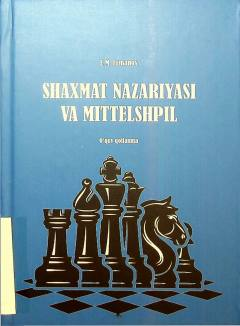

SNShaxmat nazariyasi va mittelshpil asoslarini o'rgatuvchi oliy ta'lim qo'llanmasi.
Ushbu o'quv qo'llanma shaxmat sportining nazariy asoslarini, o'yinning mittelshpil bosqichini va asosiy tushunchalarini yoritadi. Kitob O'zbekiston Davlat Jismoniy Tarbiya va Sport Universiteti talabalari uchun mo'ljallangan bo'lib, 61010300 – Sport faoliyati (Shaxmat) bakalavriat yo'nalishi bo'yicha tavsiya etilgan. Muallif E.M. Jumanov FIDE ustasi va katta o'qituvchi sifatida pedagogik mahoratni oshirish yo'llarini ham ochib bergan.